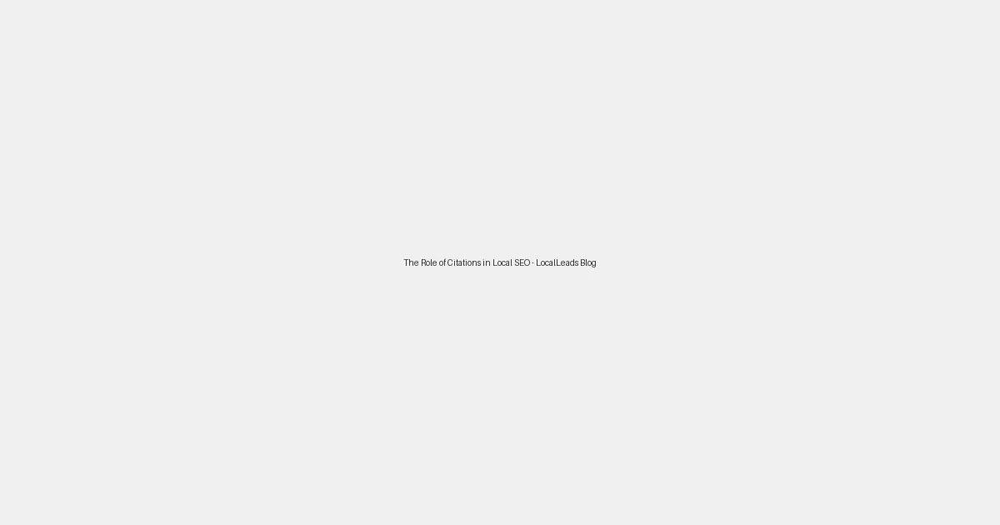

The Role of Citations in Local SEO: Building Authority and Trust

In the world of local SEO, citations are fundamental. A citation is any online mention of your business's Name, Address, and Phone number (NAP), typically without a link back to your website. While they might seem simple, consistent and accurate NAP citations across various online platforms significantly influence your local search rankings and build trust with both search engines and potential customers.
What are NAP Citations and Why Do They Matter?
NAP stands for Name, Address, Phone Number. These three pieces of information, when listed consistently across online directories, social media profiles, and other websites, signal to search engines that your business is legitimate and trustworthy. The more consistent and accurate your NAP information is, the more confidence search engines have in displaying your business in local search results.
Types of Citations:
- Structured Citations: These are listings on business directories, social media profiles, and local search engines (e.g., Yelp, Yellow Pages, Facebook, Foursquare, TripAdvisor, industry-specific directories). These usually have dedicated fields for your business information.
- Unstructured Citations: These are mentions of your business's NAP on blogs, news articles, forums, or other websites where the information isn't in a structured format. While harder to track, they still contribute to your local SEO.
The Importance of Consistency:
Inconsistent NAP information is a major red flag for search engines. If your business name, address, or phone number varies across different listings, search engines become confused and less likely to display your business prominently. Even slight variations (e.g., "Street" vs. "St.", "Suite A" vs. "Ste A") can cause issues.
Action: Conduct a citation audit to identify all existing mentions of your business online. Correct any inaccuracies immediately. Tools are available to help automate this process.
How to Build Strong Citations:
- Start with the Major Data Aggregators: Ensure your business is listed correctly on major data providers like Factual, Infogroup, and Localeze, as these distribute data to hundreds of other sites.
- Claim and Optimize Google My Business: While a primary ranking factor, your GMB profile also acts as a powerful citation source. Ensure it's fully optimized and consistent with all other listings.
- Target Industry-Specific Directories: Look for directories relevant to your niche. For example, a restaurant should be on OpenTable, a doctor on Zocdoc, etc.
- Leverage Local Business Directories: Submit your business to popular local directories like Yelp, Yellow Pages, and TripAdvisor.
- Utilize Social Media: Maintain active and consistent profiles on relevant social media platforms.
- Seek Out Local Blogs and Publications: Engage with local bloggers, news sites, and community forums for mentions.
Monitoring and Maintaining Citations:
Citation building isn't a one-time task. Businesses evolve, and information can become outdated. Regularly monitor your citations for accuracy and update them as needed, especially after a move or a phone number change.
By prioritizing accurate and consistent NAP citations, local businesses can significantly enhance their online authority, improve their local search rankings, and ultimately drive more foot traffic and calls from nearby customers. Don't underestimate the power of a solid citation profile!